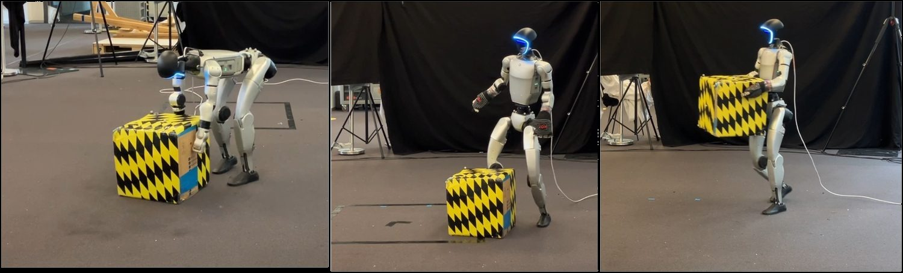
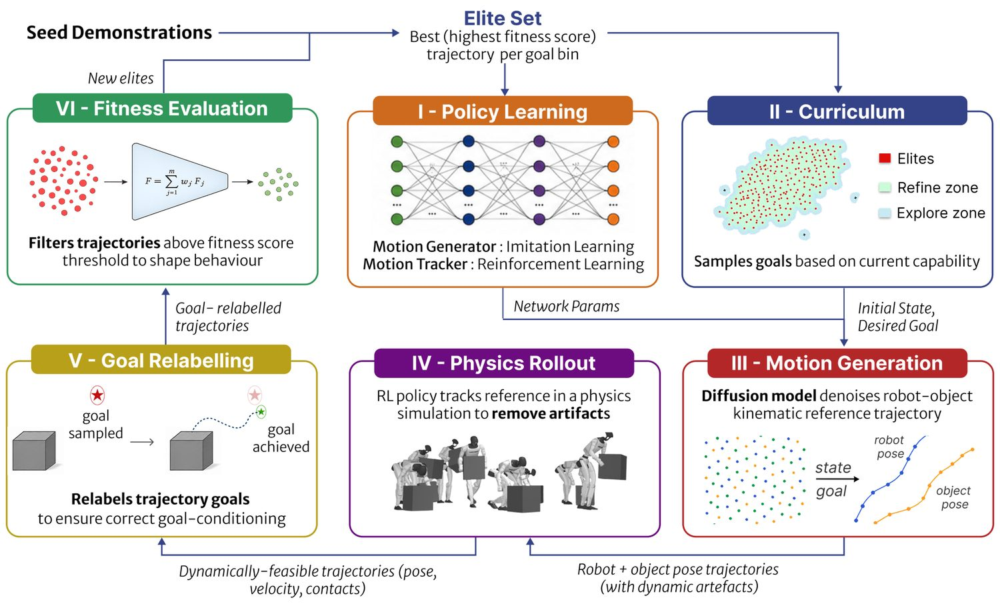
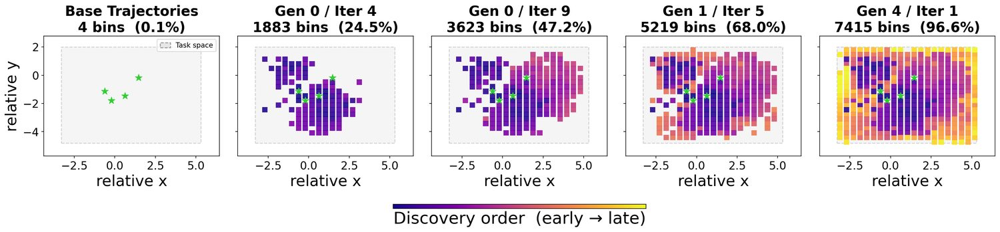
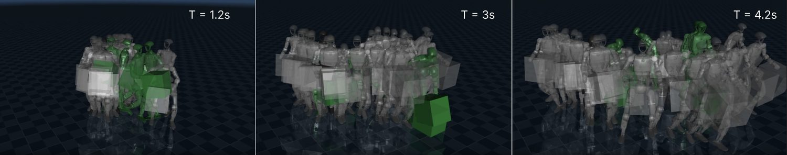
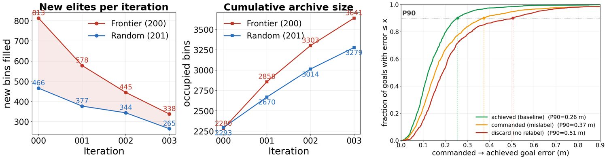

Abstract
Imitating human demonstrations has emerged as a dominant paradigm for learning humanoid loco-manipulation policies. However, scaling these approaches remains challenging due to the high cost of collecting diverse demonstrations and the need for continual human intervention to correct policy failures. We present a self-supervised framework that bootstraps from sparse demonstrations and progressively expands its behavioral repertoire, enabling the learning of a goal-conditioned policy that automatically explores the goal space with minimal expert supervision. Our approach combines diffusion-based trajectory generation with reinforcement learning, where the latter is used to track goal-conditioned trajectories produced by the diffusion model for a range of loco-manipulation skills. Through extensive ablation studies and comparisons with state-of-the-art methods, we demonstrate the effectiveness of our framework on multiple humanoid loco-manipulation skills.
Humanoid-DART Runs on a Real Unitree G1

From four demonstrations to a task space. Humanoid-DART alternates between a goal-conditioned diffusion generator that proposes new whole-body references and an RL tracker that validates them in physics. Successful rollouts are relabeled with the goal they actually reached and fed back, so the set of goals the robot can reach keeps growing, without collecting more data.
Video
Humanoid-DART Generates, Validates and Relabels

01Generate
A dual-branch diffusion transformer produces robot and object reference trajectories for a commanded goal. A global stream handles root and object motion, a local stream handles body pose, and structured partial unmasking teaches the two to stay consistent.
02Validate
An RL whole-body tracker executes each reference in simulation and acts as a dynamic filter. A physics-based fitness (tracking, contact and object terms) keeps only rollouts that are feasible and complete the task.
03Relabel & expand
Kept rollouts are stored under the goal they achieved, not the one commanded. A frontier curriculum samples the next goals just beyond the current elite set, and both models are fine-tuned on the growing archive.
Humanoid-DART Expands Task-Space Coverage Every Generation

| Method | Push | Kick | Hand-off | Pick & place |
|---|---|---|---|---|
| Humanoid-DART | 61.1 | 54.8 | 51.5 | 96.6 |
| Parameterised Motion | 3.9 | 23.9 | 24.4 | 5.7 |
| Hierarchical Diffusion + RL (no loop) | 2.2 | 2.6 | 32.0 | 6.2 |
Humanoid-DART Learns a Family of Skills from a Handful of Seeds

Elite Trajectories in Simulation
Push
Kick
Pick-and-place
Hand-off
What Makes It Work

BibTeX
@article{thiagarajan2026humanoiddart,
title = {Humanoid-{DART}: Humanoid Loco-Manipulation using Diffusion-guided
Augmentation through Relabeling and Tracking},
author = {Thiagarajan, Kanish and Debbad, Pranav and Dh{\'e}din, Victor and
Omar, Shafeef and Khadiv, Majid},
journal = {IEEE Robotics and Automation Letters},
year = {2026},
eprint = {2606.26855},
archivePrefix = {arXiv}
}